全部由 public/photos 里的真实厂内照片裁切，无图库图/渲染图；未压任何文字（避免英文站分享卡出现中文）。已上线 panovacuum.com 与 panovacuum.cn。
说明：同一张源图用不同缩放（z=1.0/1.35/1.8）与取景落点裁出多张，因此 18 张卡互不相同，但部分卡片取自同一工位/同一台腔体。
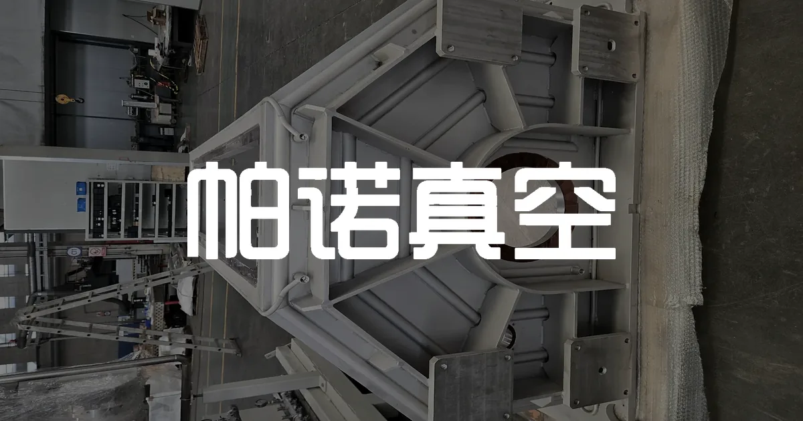
/404.html/404//en/case-studies//en//en/industrial-partnerships//en/privacy//en/terms//index.html/zh/case-studies//zh//zh/industrial-partnerships//zh/privacy//zh/terms/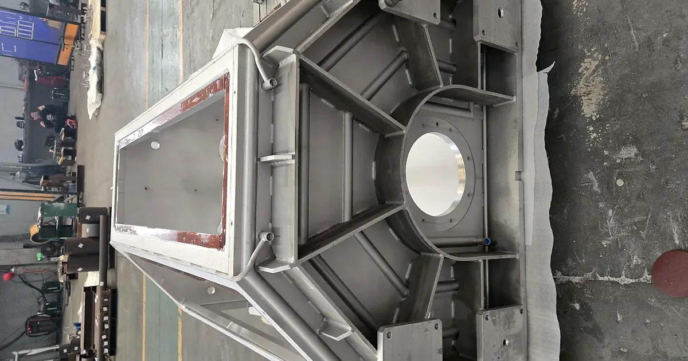
/en/blog//zh/blog/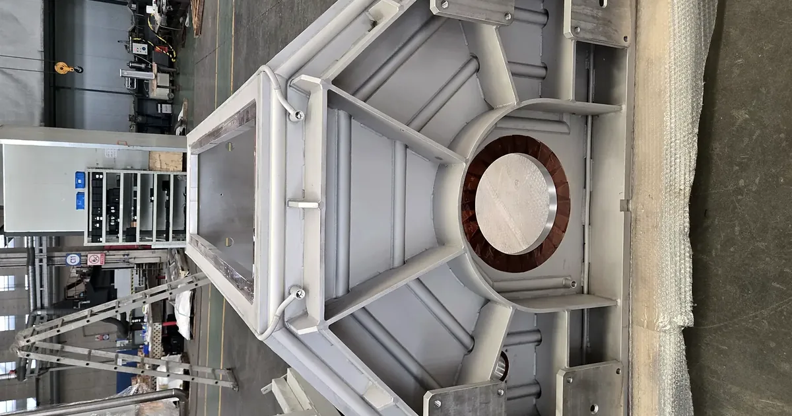
/en/blog/topic/leak-testing//zh/blog/topic/leak-testing/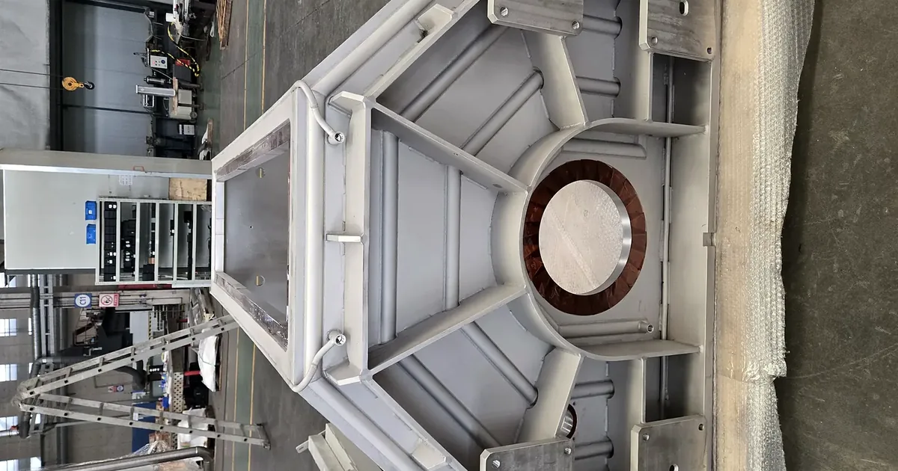
/en/blog/topic/design-materials//zh/blog/topic/design-materials/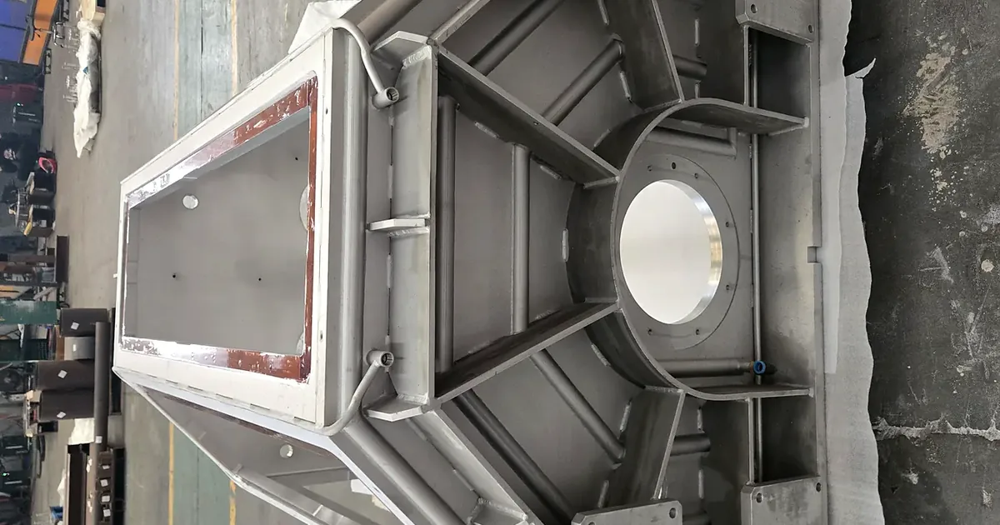
/en/blog/topic/clean-particle//zh/blog/topic/clean-particle/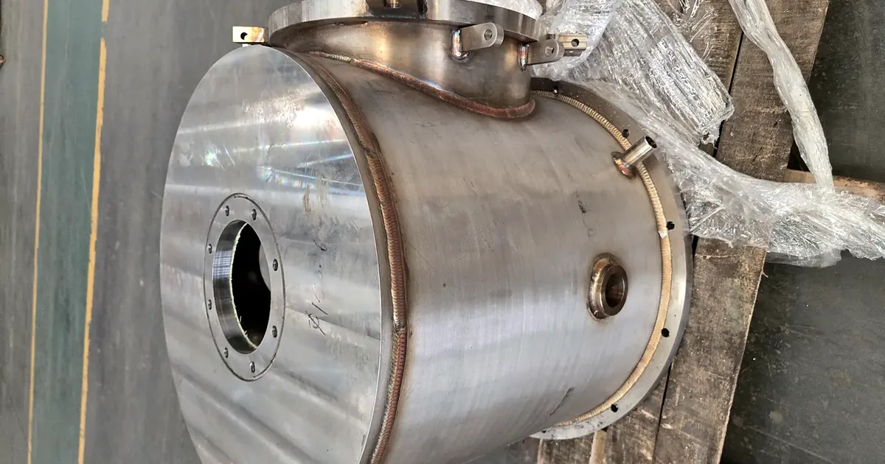
/en/blog/topic/quote-delivery//zh/blog/topic/quote-delivery/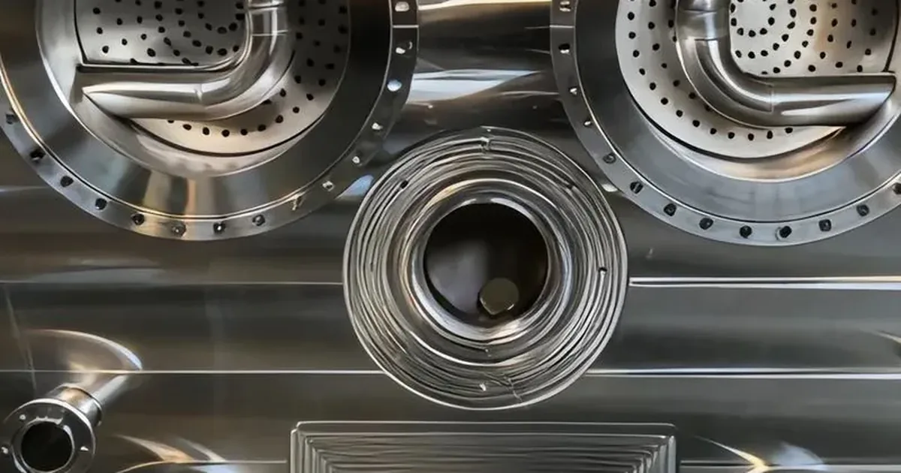
/en/blog/vacuum-chamber-7-inspection-gates//zh/blog/vacuum-chamber-7-inspection-gates/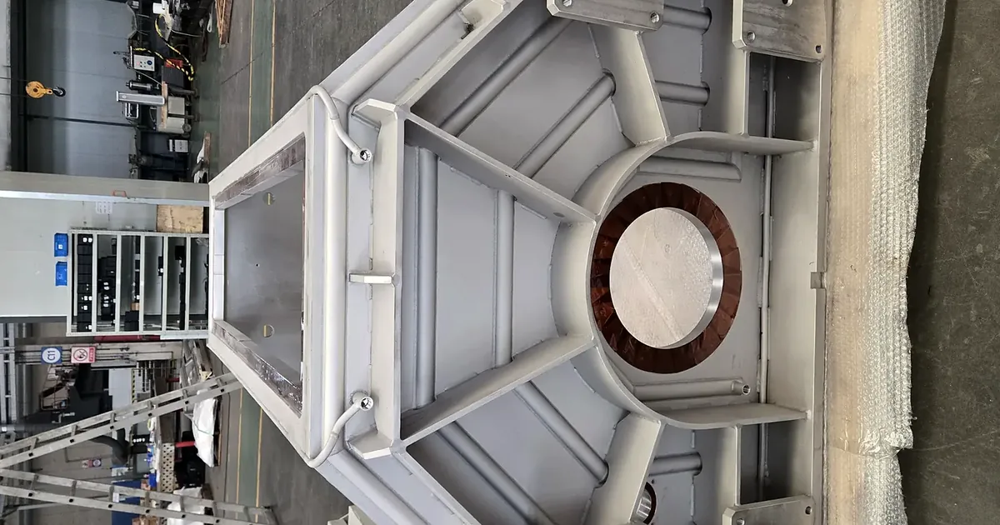
/en/blog/chamber-material-304l-or-316l//zh/blog/chamber-material-304l-or-316l/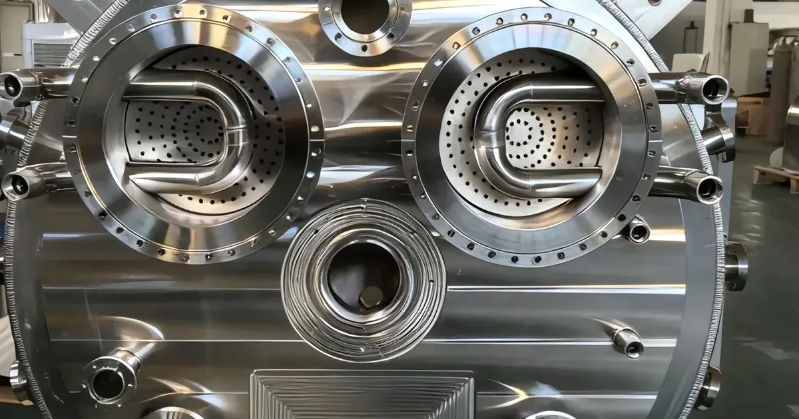
/en/blog/how-to-request-a-quote-with-a-drawing//zh/blog/how-to-request-a-quote-with-a-drawing/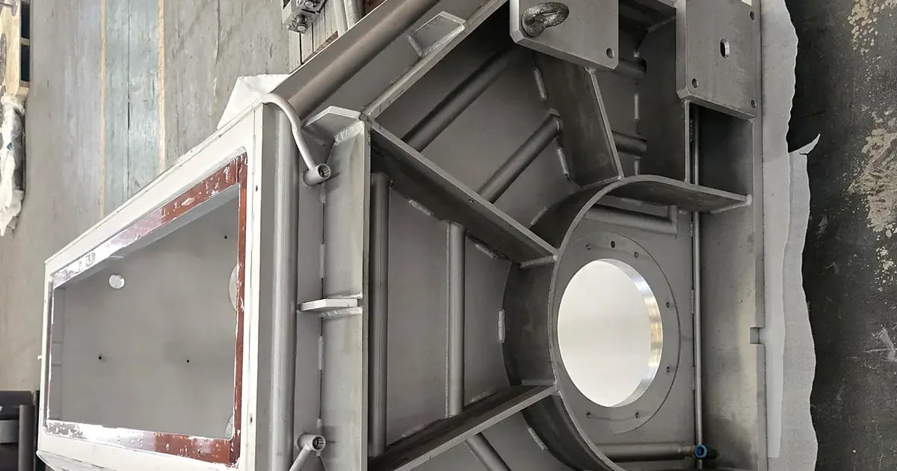
/en/blog/helium-leak-test-vs-pressure-rise//zh/blog/helium-leak-test-vs-pressure-rise/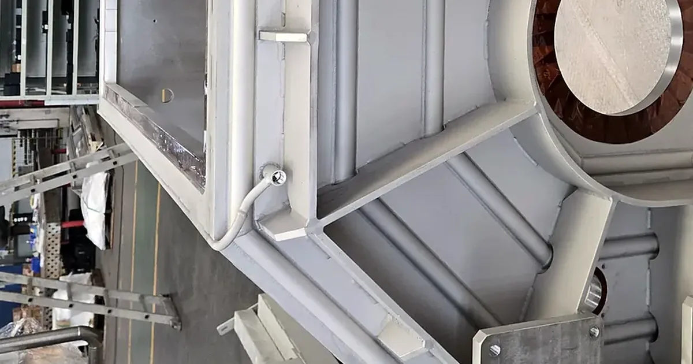
/en/blog/vacuum-furnace-structure-design//zh/blog/vacuum-furnace-structure-design/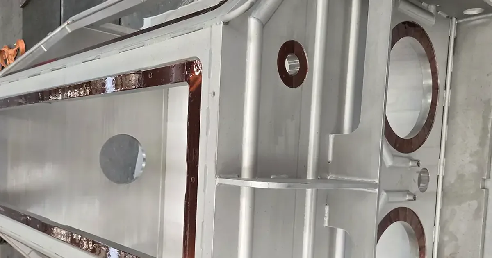
/en/blog/coating-chamber-cleaning-particle-control//zh/blog/coating-chamber-cleaning-particle-control/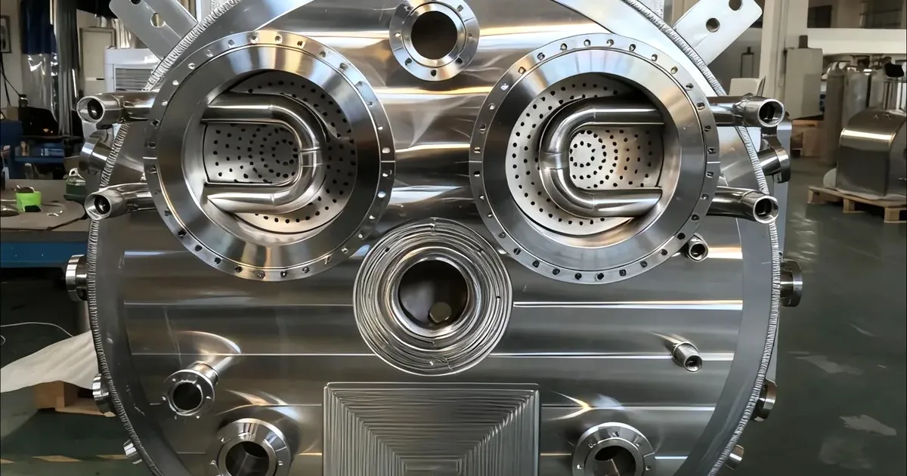
/en/about//zh/about/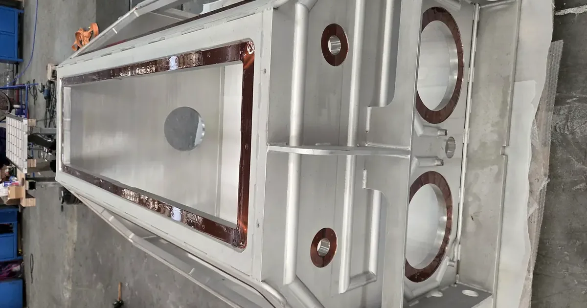
/en/company-profile//zh/company-profile/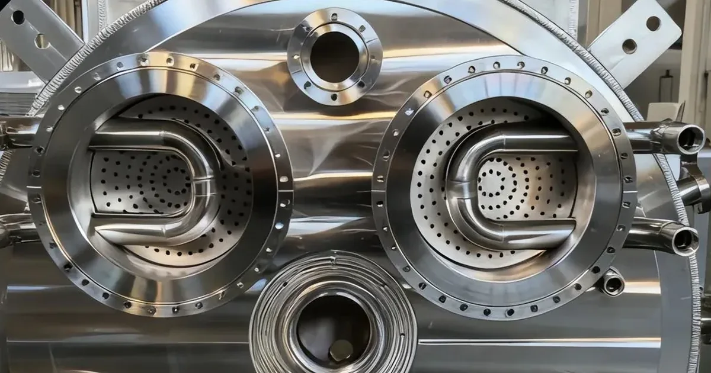
/en/request-a-quote//zh/request-a-quote/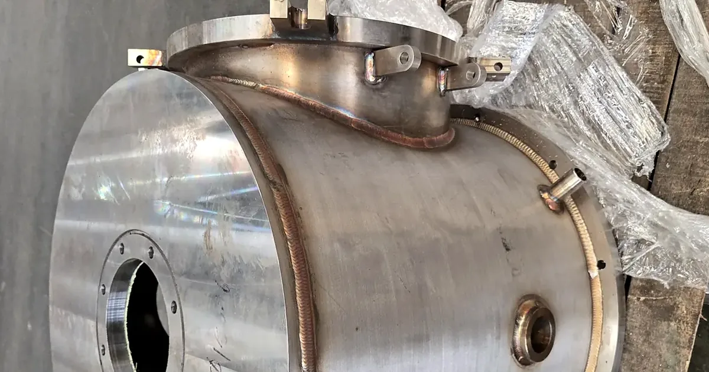
/en/manufacturing/custom-vacuum-chambers//zh/manufacturing/custom-vacuum-chambers/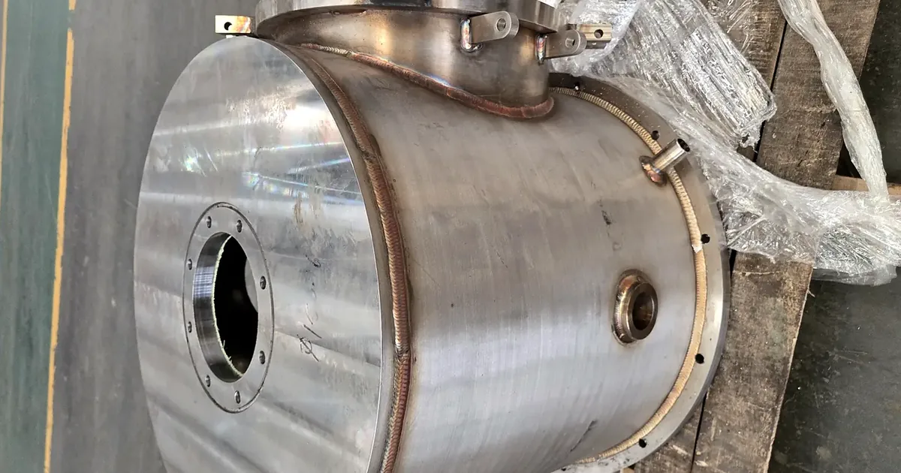
/en/manufacturing/precision-components//zh/manufacturing/precision-components/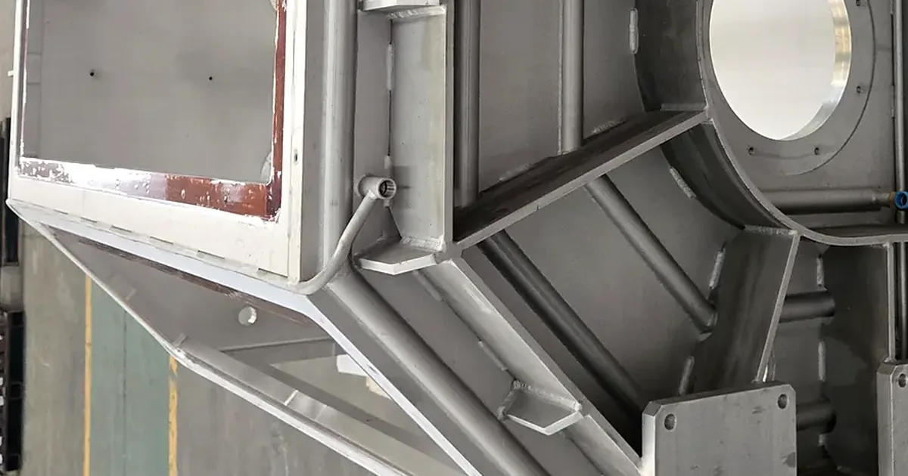
/en/manufacturing/vacuum-tight-welding//zh/manufacturing/vacuum-tight-welding/